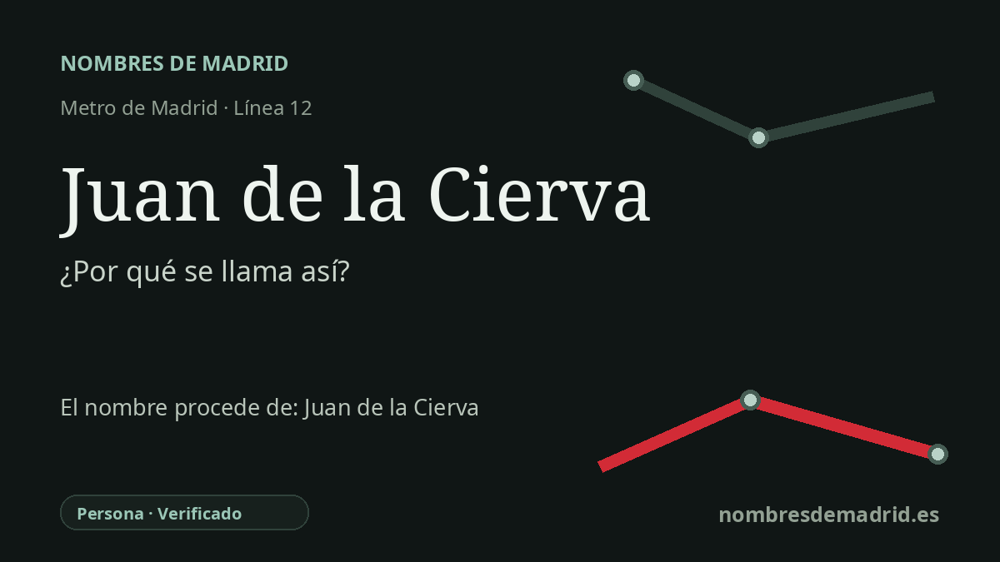

Publicado el · Investigación de Nombres de Madrid · Cómo verificamos cada origen · 7 fuentes consultadas
Respuesta rápida
La estación Juan de la Cierva toma el nombre del barrio de Getafe al que sirve, dedicado a Juan de la Cierva y Codorníu, ingeniero murciano inventor del autogiro. La relación con Getafe es especialmente local porque allí se realizaron ensayos exitosos del autogiro en 1923.
La historia del nombre
La estación de Metro Juan de la Cierva toma su nombre público del barrio de Getafe en el que se encuentra. La Comunidad de Madrid sitúa la estación en la avenida de España, a la altura de la calle Gerona, "en el barrio que le da nombre". Detrás de ese nombre de barrio está Juan de la Cierva y Codorníu, una de las figuras españolas más conocidas de la aviación del siglo XX.
Juan de la Cierva nació en Murcia en 1895 y se formó como ingeniero de Caminos. Su gran aportación fue el autogiro, una aeronave sustentada por un rotor libre y propulsada hacia delante por una hélice convencional. No era un helicóptero moderno, pero su tecnología de rotor fue decisiva para la historia posterior del vuelo de ala rotatoria.
Getafe no es un detalle accidental en esta denominación. El Museo virtual de Getafe indica que una avenida y un barrio llevan el nombre de Juan de la Cierva porque algunos vuelos de prueba se realizaron en Getafe. La documentación del centenario del autogiro identifica el vuelo exitoso del C-4 del 17 de enero de 1923 en la actual Base Aérea de Getafe como un momento clave, pilotado por el capitán Alejandro Gómez Spencer.
La estación se abrió dentro de MetroSur, la línea circular 12 que da servicio a los grandes municipios del sur y suroeste madrileño. Su propio interior refuerza la dedicatoria: la Comunidad de Madrid recoge un mural titulado "Homenaje a de la Cierva", obra de Carlos Alonso Pérez y Luis Sardá de Abreu, colocado en un punto destacado del vestíbulo sobre las vías de la línea 12.
La etimología básica está, por tanto, bien sustentada: la estación no parece proceder de un decreto biográfico directo, sino del barrio, cuyo nombre conmemora al inventor. Algunas fuentes discrepan al fijar el momento exacto y el lugar del primer vuelo del C-4: la documentación del centenario apoya con fuerza el 17 de enero de 1923 en Getafe, mientras que una resolución del BOE sobre patrimonio aeronáutico menciona el 31 de enero de 1923 en Cuatro Vientos. Por eso el origen personal es seguro, pero la cronología técnica sigue abierta.